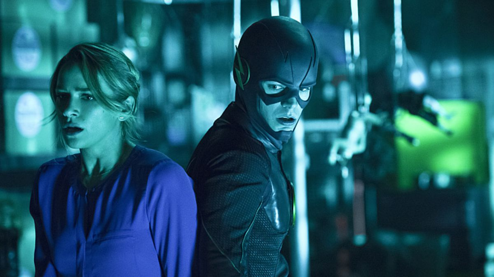

Flash S02|E09 Running to Stand Still
The Flash had a lot going on this week as it moved forward from last week’s big Arrow crossover, resumed the Zoom storyline, brought several other villains into the picture and even picked up the Wally West subplot again. All this, plus it was Christmas in Central City. And aside from a few sticking points, this episode juggled all of that material quite well.
Easily the big appeal with this episode was seeing Mark Hamill return as the Trickster. The previous trickster episode is the most purely fun episode this series has delivered, and that’s saying quite a lot. Hamill is always a hoot, essentially playing the villain like a live-action version of his Joker. Liam McIntyre’s Mardon is comparatively straightforward, but he still brought a sense of gravitas and menace to the role that worked well during the climactic showdown. This pairing worked because neither villain is really enough to challenge Barry on his own, but working together and exploiting his nobility, they had the Scarlet Speedster on the ropes.
The conflict with Trickster and Weather Wizard led to a couple of neat action sequences. Trickster’s dreidel bombs were exactly what you expect from the villain - outlandishly stupid yet surprisingly effective. Then there was the chase scene as Barry pursued the floating Mardon across the city and even ran across the rotors of a helicopter.
The renewed focus on the Wally West storyline was a welcome change of pace for the show. If nothing else, it allowed Jesse L. Martin to flex his dramatic muscles. Martin was predictably excellent this week as his character wrestled with the knowledge that he had never been there for his son. It was heart-wrenching stuff. All the same, it was nice to see Joe’s arc given a happier resolution, with him acknowledging that whatever may come with Wally, Barry is his son in every sense that counts. Candice Patton also enjoyed some strong scenes this week. She’s a great addition to the mix when her character is actually given something meaningful to do.

Then there was Patty’s character arc. The episode handled her conflict with Mardon well enough. Of course it was going to culminate with Barry talking her down from shooting the killer of her father. The whole ordeal also drew attention to how increasingly ridiculous it’s becoming that Barry hasn’t revealed his secret to her. I almost expected him to unmask as a means of convincing her to spare Mardon’s life (though that would result in two more villains knowing his secret). Luckily, it appears that the next episode will address the secret identity thing directly.
Wells had another subplot of his own as the episode shed light on his connection to Zoom and what the villain is actually trying to accomplish. I was fairly mixed on this portion of the episode. On one hand, it’s intriguing to see Wells reluctantly falling into the same role his Earth-1 counterpart so willingly filled in Season 1. He’s preying on Barry’s trust and forcing the hero to become stronger and faster for his own ends. The fact that Barry made such an effort to forgive his old mentor makes this twist all the more tragic.
But as for Zoom, this episode did him no favors. Is this all the villain’s master plan boils down to? He’s a Speed Force vampire? That’s disappointingly straightforward, and a steep downgrade from his motivations in the comics. We can only hope there’s a lot more to Zoom than is apparent right now. But comparing this episode to last year’s mid-season finale and the big reveal of Wells as the Reverse-Flash, the Zoom material fell pretty flat. And as a result, the show doesn’t quite have the same momentum as it moves into the new year.
- Next Episode Jan 19
- Previous Episode
Next episode preview: